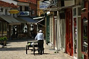

Disclaimer: These pages are not actively maintained, and some of the practical information on the site is out of date. I am working on a new version of the site that will focus more on my photos and memories of travel in Southeast Europe, and less on practical details that too easily become obsolete. In the meantime, please treat the information here with caution.

View from Kale
Kale and Mustafa Pasha Mosque
Skopje and Surroundings
Most visitors to Macedonia pass through Skopje at some point during their trip, but few linger there for very long. It's true that when you are faced with Skopje's rows of concrete apartment blocks and scruffy areas of waste ground, a quick escape to Ohrid can seem like a tempting proposition. But it would be a mistake to write off Skopje too quickly. Its attractions include one of the most authentic bazaars in the Balkans, a pair of churches containing some of Macedonia's finest examples of religious art, a clutch of laid-back cafes, and a varied range of possible daytrips.
Central Skopje
Modern-day Skopje, like several other Balkan cities, can only be understood with some knowledge of the catastrophes that have shaped it. The most important of these was an earthquake in 1963, which killed about a thousand people and destroyed a huge proportion of the city's buildings, including the homes of around 100,000 people. The wily Marshal Tito was able to extract aid from both East and West (including several countries significantly poorer than Yugoslavia), and a massive construction program got under way. As a result much of Skopje's architecture, especially south of the Vardar river, dates from the 1960s and 1970s. Fortunately not all of Skopje's heritage was lost, and the northern half of the city still preserves many reminders of Skopje's heyday as an important trading town of the Ottoman Empire.
What to see : some suggestions
At the heart of Skopje the Vardar River is spanned by the elegant arches of the Stone Bridge (Kamen Most). North of the river, on the other side of a highway that cuts rudely through the centre of the city, is the Čaršija (Bazaar) area. The bazaar retains the layout and many of the buildings of the Ottoman area, when the cities Muslims and Christians came together here to trade. It's an intriguing place to explore, with a more marked Eastern atmosphere than its more famous but slightly sanitised counterpart in Sarajevo. A good place to get an overview of the area is the rooftop cafe of the Arka Hotel, where you can look straight down on the maze of cobbled streets (with the bonus of not having to look at the Arka Hotel).
Main Post Office
Skenderbeg Monument
Kuršumli An

Street in Čaršija
Čaršija can be enjoyed simply by wandering the lanes at random, peeking into tiny, highly specialised shops and savouring the smell of kebapči, but there are some specific sights to aim for. The Church of Sveti Spas (the Holy Saviour), like many churches built during the Ottoman era, is outwardly modest but has a remarkable interior. The highlight is the iconostasis (altar screen), carved from walnut wood in the early 19th century. The intricate carving took the Filopovski Brothers twelve years, and features a variety of biblical scenes, often given a distinctively Macedonian twist. Another example of the brothers' work can be seen at the monastery of Sveti Jovan Bigorski in the Mavrovo region.
Not far from Sveti Spas is the Mustafa Pasha mosque, the largest and probably the most impressive in Skopje (both the building and the garden were closed for renovation when I visited in May 2007, and I'm told they were still closed in April 2008). A number of other mosques are dotted around Čaršija. My favourite is the Ishak Beg Mosque, which provides a tranquil refuge from the rather frenetic Bit Pazar food market. Most of the blue tiles that gave the mosque its alternative name "Aladja" ("decorated" or "colourful") have long since disappeared, but some are still visible on the hexagonal turbe (mausoleum) in the garden.
The bazaar also features has a number of interesting secular buildings. There are three surviving hans (trading inns), built to accommodate merchants visiting the bazaar. The most interesting is probably Kuršumli An. It follows the conventional design of trading inns, with a rather blank-looking, security-conscious exterior opening to an imposing inner courtyard surrounded by arched galleries. The Han currently houses part of the Museum of Macedonia's archaeological collection. The adjoining main museum building has a large collection of traditional costumes (note the significant regional differences even in a country as small as Macedonia) and some impressive icons. At the southern end of Čaršija the Daud Pasha Baths now house an art gallery, worth visiting for a look at the ceilings of the multi-domed building.
The bazaar is overlooked by a small hill which played a key role in the development of the city. Although it appears modest in height it dominates a large area of the Vardar valley, making it an excellent defensive position. These days not much is left standing in the Kale fortress apart from some walls and a couple of towers, but it is a pleasant place for a walk, with good views of the city spread out below Mount Vodno.
The south side of the city has relatively few sights of interest to tourists. Almost every building here dates from after the 1963 earthquake. The original master plan for the reconstruction was devised by the distinguished Japanese architect Kenzo Tange, but many aspects of his design were never carried out - it's hard to know if the overall result would have been better or worse if they had been. Perhaps some day Skopje will be regarded as a treasury of late twentieth century architecture, but it tends to strike most people as a rather grey collection of concrete boxes.
Immediately south of the Stone Bridge is the vast expanse of Macedonia Square, overlooked by the main post office building, probably Skopje's most unusual piece of modern architecture. The building looks as if it would be large enough to administer the postal system of a country ten times the size of Macedonia. The pedestrianised streets radiating from the square are lined with cafes and this area has an especially pleasant atmosphere when the crowds appear for their evening korso. At the end of Marshal Tito Street is the Old Train Station, its clock forever stopped at the moment the earthquake struck. Like Hiroshima's A-bomb Dome, the station has been left in its partially destroyed state as a monument to loss. This is perhaps not quite as effective in Balkans as in Japan, given the number of buildings left half-built or half-collapsed for other reasons. The crumbling station has recently gained an incongruous new neighbour in the form of the glitzy "Ramstore" shopping mall. To the west of the centre is the Cathedral of St Clement of Ohrid, one of Skopje's more attractive modern buildings, essentially consisting of one big dome.
Sights of interest outside central Skopje, including Sveti Pantelejmon Monastery, are described below.
Practicalities
Skopje's train station and Intercity Bus Station are located side by side, a 10 minute walk east from Macedonia Square. Just like their equivalents in Sofia, they graphically illustrate the relative priorities of road and rail transport in the Balkans: the privately-run bus station is clean and bright, with helpful (frequently English-speaking) staff, while the train station is a grim and unwelcoming place. You may see it referred to as the "new" train station, to distinguish it from to the old station detroyed by the earthquake.
Skopje has excellent international bus connections to Serbia (including Kosovo) and Sofia. There are about a dozen buses daily to Belgrade (6-8 hours, 1100-1400 MKD), most of them calling at Niš, six to Prishtina (2.5 hours, 200 MKD), and eight to Sofia (5 hours, 800 MKD). There is one bus daily to Tirana, with more connections from Tetovo. Train travel is a better option for getting to Greece, as buses run only a few times a week.
There are three daily international trains to Belgrade (9 hours) via Niš, two to Thessaloniki ("Solun" in Macedonian, 4.5 hours, 11 euro), and two to Prishtina (2.5 hours). All of these trains are often subject to delays. There are no direct trains to Bulgaria - a train journey to Sofia with a change at Niš will take much longer than a direct bus.
It's easy to get from Skopje to just about any town of any size in Macedonia (and quite a few villages) by bus - few journeys take more than four hours. Skopje is also the hub of the very limited domestic rail network.
Unusually for a city of its size, Skopje has no trams or trolley buses. Battered local buses are plentiful but the routes can be tricky for non-locals to figure out. The city centre is quite small so you may not need to use local buses unless you are staying in the suburbs. Taxis are very good value - in fact for many journeys a taxi ride for two people is cheaper than a bus. Taxis are especially useful for getting to some of the outlying sights (see below). Be very wary of any taxi driver who approaches you at the bus/train station or airport.
Skopje has an improbably large number of very comfortable hotels suitable for travellers with expense accounts. The selection of mid-range and budget accommodation is more limited, especially in the centre of town, but appears to be improving - with patience you should be able to find somewhere to meet your needs. Even if you normally prefer to just turn up and find somewhere to stay, Skopje is one place where you might want to consider reserving in advance.
Skopje supposedly has a tourist information office just north of the Stone Bridge, but I've never heard of anyone actually finding it open.
Sv Pantelejmon Monastery
Mount Vodno
Sveti Nikola Church, Matka
Boat on Lake Matka
Around Skopje
Sveti Pantelejmon and Mount Vodno
All of the places described above can comfortably be visited in a day's walking around central Skopje, but you will need to leave the centre to see one of the city's most important sights. The Monastery of Sveti Pantelejmon, in the little village of Gorni Nerezi, 6km from the centre on the slops of Mount Vodno, is an essential visit for anyone interested in Byzantine art. The twelfth century frescoes inside the little church are amongst the finest in Macedonia. The Lamentation of Christ is particularly impressive for its emotional portrayal of the grief of the Mother of God over the body of her son, which represents a departure from earlier Byzantine painting. In the modern buildings of the monastery courtyard are a hotel and restaurant, with fine views of Skopje and the Vardar valley - it is easy to see how the growth of the city has been constrained by the terrain to follow an east-west axis.
There is no public transport to Gorni Nezeri, so you will need your own vehicle or a taxi - unless you hike down from Mount Vodno (which I managed to do by accident).
Skopje is dominated by the rounded summit of Mount Vodno (1066m). Although there are more exciting mountains in Macedonia, a hike on Vodno makes a nice break from the city traffic. It is possible to reach the highly visible Millenium Cross at the summit in less than three hours' walking from Macedonia Square. The only tricky bit is finding the start of the trail (red/yellow blazes) on Salvador Allende Street - from there it's a straightforward uphill slog to the Hotel Vodno halfway up (you could make things easier on yourself by taking a vehicle to the hotel car park). From the hotel a number of marked and unmarked trails go to the summit; I found that the best views were obtained by heading over the eastern shoulder of the mountain rather than straight up through the forest. There is a mountain hut beside the Meccano-like cross at the summit. As well as the expected views over the city, there is a panorama of a much more rural lansdcape to the south, leading the eye to Mount Kitka and the even higher peaks of Central Macedonia.
Lake Matka
The area around Lake Matka, a half-hour drive from Skopje, is popular for weekend outings but almost deserted during the week. There is a lot to see here - a lake twisting between imposing cliffs, several monastery churches, a couple of restaurants, and the opportunity for hiking, boating, or climbing - making it well worth a full day excursion from Skopje.
At the first monastery you come to, Sveta Bogorodica, there is a choice of paths. An easy trail continues along the Treška River to a dam, behind which Lake Matka snakes through a canyon. At one of the rate flat pieces of land in the gorge is Sveti Andrija church. Beside it is the Matka mountain hut, where you may be able to hire a rowing boat. The second option at Sveta Bogorodica is to turn left, crossing the bridge over the river and following the signposted path to Sveti Nikola Church. (The Church can also be reached by taking a boat across the lake at Matka Hut and taking a steep uphill path). Sveti Nikola is located on a small plateau surrounded by towering crags; from the grounds there are wonderful views of the lake and Sveti Andrija almost directly below. The final option at Sveta Bogorodica is to head uphill and to the right, where a trail leads to three more churches high above the lake. The trail is poorly marked and I have to confess that I gave up trying to find the churches.
If you like walking, one of the most enjable excursions in the vicinity of Skopje is the 11km downhill hike from the Vodno cross to the Matka dam. The first part of the hike is reasonably well marked (red/yellow blazes) and follows a gentle slope westward along the Vodno ridge. On the way you'll pass some tank hideouts, nowdays sheltering nothing more threatening than cattle. Perhaps the highlight of the hike is the first view of Lake Matka 600 metres below. From here on the descent is much steeper and less well marked, although I had no real trouble following the path. Keep your eyes peeled for Sveti Nikola church far below and to the left; such is the scale of the surroundings that it looks like a toy until you are close to it. A visit to the church can be incorporated into the hike if you manage to spot a rather overgrown left turn; if you miss this you'll end up following a somewhat quicker route down to the bridge below the dam. The full hike, which should take less than four hours, is described in Chapter 12 of the Bradt Guide, but note that some of the markings seem to have been improved since it was written - I found navigation much easier than the book suggests.
City bus number 60 runs from central Skopje via Saraj to the Matka dam on a rather irregular timetable (check the schedule on the JSP website - see the links page). A taxi from the centre should cost about 300 MKD.
Šarena Džamija, Tetovo
Arabati Baba Tekke
Tetovo
At first sight the run-down concrete blocks of central Tetovo might not appear to justify an excursion from Skopje, but there is enough of interest to make a visit worthwhile. The city is home to Macedonia's largest concentration of ethnic Albanians (compared to Skopje, the prevalence of Latin script is immediately noticeable), and not surprisingly the main sights are Islamic religious buildings.
A short walk from the central plaza is the Šarena Džamija (Coloured Mosque). (I have also seen it referred to as Pasha Džamija, Aladja Djamija, Painted Mosque, and Motley Mosque). Its brightly painted, elaborately patterned facade and immaculately manicured garden come as a pleasant shock after the dilapidated greyness of the city centre. The interior is also unusual, abandoning the strictly abstract patterns of most mosques in favour of frivolous depictions of flowers, fountains, and pastel views of Istanbul.
Beyond the Coloured Mosque at the edge of the city is the Baba Arabati tekke. The Bektashi order of dervishes established many tekkes (the equivalent of monasteries) in the Balkans during the Ottoman era; Tetovo is one of the largest. It has gone through some difficult times since Ottoman rule ended in 1912. The Bektashi order has now regained access to the tekke, but for the moment many of the buildings are in poor condition. Nevertheless it is possible to imagine what the large complex of gardens, fountains, inns, and prayer rooms might have been like when the order was thriving. Several of the buildings exhibit the same style of colourful decoration as Šarena Džamija.
The hillier streets of the city, between central square and the mountains, have retained some of their character and are well worth exploring; the surroundings become increasingly rural as you follow the Pena River uphill. Many houses are decorated by carefully tended flowers, probably helped by rain which, judging by my two visits to the town, is plentiful. I'm reliably informed that the threatening bank of cloud to the west of the town sometimes lifts to allow a view of the šar Planina mountains. A winding road leads to the ski resort of Popova šapka; the cable car near the tekke is in a state of disrepair.
Transport to Tetovo is straightforward; buses run roughly hourly from Skopje's Intercity Bus Station and take about 45 minutes. There are frequent buses onwards to Gostivar, some of which continue to other parts of Western Macedonia (Debar, Struga, Ohrid). Tetovo also has connections to Kosovo and Albania. The city centre is small enough to visit on foot.
More photos of Skopje, Tetovo, and Matka in my Republic of Macedonia Galleries